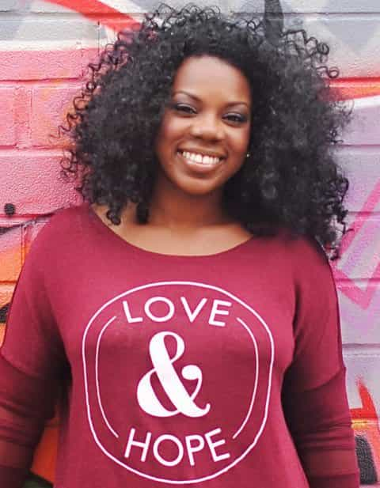

Helping women who claim to be victims of “domestic violence” is one of the best ways to suck up your own time, not to mention inject unnecessary emotions and drama into your life. Most of the time, your attempts to help will not be met with gratitude and, in fact, will frequently garner hostility from the person you are trying to “save.” Moreover, the target of your rescue mission generally doesn’t want to be saved anyway.
There is no need for anger or bitterness when you wash yourself of a woman claiming domestic violence, as hard as suppressing those emotions may be. Like someone dependent on drugs, an obese person, or another kind of addict, plenty of women are addicted to the rush of either a violent man (who is part of a small minority of men) or the thrill and attention of claiming to be the victim of a violent man who isn’t actually violent. Any logical, rational advice you give will invariably engender her opposition or inaction.
Particularly if a woman returns to her “abusive” boyfriend or husband after you have tried to save them, helping someone claiming domestic violence leads over and over again to unnecessary, sometimes aggressive or violent conflict with third parties. Even when this does not happen to the worst extent, you find yourself invested in an emotionally unstable woman, whether she causes the instability herself or not.
Most important of all, there is usually no evidence to support claims of domestic violence, bar the fickle testimonies of the couple. If you choose to help, you are almost certainly engaging in a wild goose chase with next to no merit. In today’s climate, asking a woman to do the dishes is probably considered domestic violence.
My experiences
Does the helping hand really help? Most times it doesn’t.
I learned fairly early on in adulthood that helping women “abused” by men is typically a fruitless exercise. For example, around the age of 19, I attempted to intervene in a situation where a female friend was being told, among other things, that she was worthless by her boyfriend at the time. At one stage, he even told her to kill herself. With zero sexual interest in the girl, I simply thought the guy’s behavior was wrong.
Yet, rather than thanking me for my assistance, my advice to this girl was greeted with histrionics and ingratitude. It also attracted a series of threats from her boyfriend, none of which eventuated. I had brought myself into heated verbal exchanges with this guy, without it having any impact whatsoever on the girl. If anything, the whole saga solidified her feelings for him. Aside from maybe interjecting in the “kill yourself” part, I had wasted my time completely. Nevertheless, it was a great lesson to learn so young.
I came to realize that women like this ex-friend are positively attracted to men like him. No amount of investment in time or energy would deter what were emotional longings for Mr. Demeaning. Second-hand experiences I had before and after this situation suddenly began to make sense.
#WhyIStayed and other similar bullshit
The internet exploded with questions about [Janay Rice] … why didn’t she leave [Ray Rice]? Why did she marry him? Why did she stay? I can’t speak for Janay Rice, but I can speak for Beverly Gooden. Why did I stay? … Leaving was a process, not an event. And sometimes it takes a while to navigate through the process. I believe in storytelling. I believe in the power of shared experience. I believe that we find strength in community. That is why I created this hashtag. I hope those tweeting using #WhyIStayed find a voice, find love, find compassion, and find hope.”
— #WhyIStayed “creator” Beverly Gooden promoting Beverly Gooden

Yes, because hope, rather than self-preservation, will save a woman who is a victim of actual domestic violence.
In addition to biological drives that impel women to stay with or seek out domineering sex partners, boyfriends, and husbands, good old feminist “storytelling” also motivates females in sticking by or returning to men that they claim hit them or, much more ambiguously, “mistreat” them. A whole cottage industry has developed to support the narrative that women can and should stay with supposedly abusive partners.
If we’re being brutally honest, #WhyIStayed and other feminist call signs keep swarms of feminist typists gainfully employed. They sustain the small rate of actual domestic violence so that these typists can continue to publish articles, despite them being highly exaggerated ones.
Of all the modern-day battles we could say are uphill because of perverse cultural conditioning, seeking to assist a woman who claims to be abused takes the cake. Realistically, what are your prospects of dissuading a woman from what is usually a self-determined, psychological, or biological course of action? If you say your chances are relatively high (whatever that means), is the expenditure of time and energy really worth it? The impact on your own life is likely to be much more than you anticipate.
An exception to the principle for sisters, female cousins, etc.
Doing more for family still makes sense, with limits.
There are some common sense exceptions to what I have been saying. If you or your family have more skin in the game and find one of your relatives in trouble, you obviously should try harder. Inasmuch as family units have been eviscerated in recent years, blood and similar ties still count for something nowadays.
Bear in mind, however, that many of the same limitations you have with female friends or acquaintances will apply in large part to your relatives. Maybe you will draw the biggest line when it comes to protecting your (future) daughter, but the rest of the time you are probably gnashing your teeth over sisters, cousins, or other female relatives who will just not listen to you (and who are in all likelihood gilding the lily about the level of mistreatment, too). If laying down the law doesn’t work the first or second time, cut your losses and move on for the time being.
There may come a point when you need to involve police for the very small minority of cases that truly warrant it. That is your call. And, of course, I am not advocating against helping women when you know at the gut level that they need it. What I am saying is that you need to avoid being a martyr in circumstances where being a martyr, literally or figuratively, is against your own interests.
Remember, most women either don’t want to be saved or are willing to cost you your state of mind and resources should you put yourself on the line for them.
Read More: Yet Another Survey Shows That LGBT Domestic Violence Rates Are The Same As Heterosexual Couples